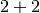
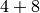
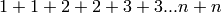

This document is for Celery's development version, which can be significantly different from previous releases. Get old docs here: 2.5.
Canvas: Building Workflows¶
Subtasks¶
New in version 2.0.
The subtask type is used to wrap the arguments and execution options for a single task invocation:
from celery import subtask
subtask(task_name_or_cls, args, kwargs, options)
For convenience every task also has a shortcut to create subtasks:
task.subtask(args, kwargs, options)
subtask is actually a dict subclass, which means it can be serialized with JSON or other encodings that doesn’t support complex Python objects.
Also it can be regarded as a type, as the following usage works:
>>> s = subtask("tasks.add", args=(2, 2), kwargs={})
>>> subtask(dict(s)) # coerce dict into subtask
This makes it excellent as a means to pass callbacks around to tasks.
Callbacks¶
Callbacks can be added to any task using the link argument to apply_async:
add.apply_async((2, 2), link=other_task.subtask())
The callback will only be applied if the task exited successfully, and it will be applied with the return value of the parent task as argument.
The best thing is that any arguments you add to subtask, will be prepended to the arguments specified by the subtask itself!
If you have the subtask:
>>> add.subtask(args=(10, ))
subtask.delay(result) becomes:
>>> add.apply_async(args=(result, 10))
...
Now let’s call our add task with a callback using partial arguments:
>>> add.apply_async((2, 2), link=add.subtask((8, )))
As expected this will first launch one task calculating , then another task calculating .
Groups¶
The group enables easy invocation of several tasks at once, and is then able to join the results in the same order as the tasks were invoked.
group takes a list of subtask‘s:
>>> from celery import group
>>> from tasks import add
>>> job = group([
... add.subtask((2, 2)),
... add.subtask((4, 4)),
... add.subtask((8, 8)),
... add.subtask((16, 16)),
... add.subtask((32, 32)),
... ])
>>> result = job.apply_async()
>>> result.ready() # have all subtasks completed?
True
>>> result.successful() # were all subtasks successful?
True
>>> result.join()
[4, 8, 16, 32, 64]
The first argument can alternatively be an iterator, like:
>>> group(add.subtask((i, i)) for i in range(100))
Group Results¶
When a group is applied it returns a GroupResult object.
GroupResult takes a list of AsyncResult instances and operates on them as if it was a single task.
It supports the following operations:
successful()
Returns True if all of the subtasks finished successfully (e.g. did not raise an exception).
failed()
Returns True if any of the subtasks failed.
waiting()
Returns True if any of the subtasks is not ready yet.
ready()
Return True if all of the subtasks are ready.
completed_count()
Returns the number of completed subtasks.
revoke()
Revokes all of the subtasks.
iterate()
Iterates over the return values of the subtasks as they finish, one by one.
join()
Gather the results for all of the subtasks and return a list with them ordered by the order of which they were called.
Chords¶
New in version 2.3.
A chord is a task that only executes after all of the tasks in a taskset has finished executing.
Let’s calculate the sum of the expression  up to a hundred digits.
First we need two tasks, add() and tsum() (sum() is already a standard function):
@celery.task()
def add(x, y):
return x + y
@celery.task()
def tsum(numbers):
return sum(numbers)
Now we can use a chord to calculate each addition step in parallel, and then get the sum of the resulting numbers:
>>> from celery import chord
>>> from tasks import add, tsum
>>> chord(add.subtask((i, i))
... for i in xrange(100))(tsum.subtask()).get()
9900
This is obviously a very contrived example, the overhead of messaging and synchronization makes this a lot slower than its Python counterpart:
sum(i + i for i in xrange(100))
The synchronization step is costly, so you should avoid using chords as much as possible. Still, the chord is a powerful primitive to have in your toolbox as synchronization is a required step for many parallel algorithms.
Let’s break the chord expression down:
>>> callback = tsum.subtask()
>>> header = [add.subtask((i, i)) for i in xrange(100)]
>>> result = chord(header)(callback)
>>> result.get()
9900
Remember, the callback can only be executed after all of the tasks in the header has returned. Each step in the header is executed as a task, in parallel, possibly on different nodes. The callback is then applied with the return value of each task in the header. The task id returned by chord() is the id of the callback, so you can wait for it to complete and get the final return value (but remember to never have a task wait for other tasks)
Important Notes¶
By default the synchronization step is implemented by having a recurring task poll the completion of the taskset every second, applying the subtask when ready.
Example implementation:
def unlock_chord(taskset, callback, interval=1, max_retries=None):
if taskset.ready():
return subtask(callback).delay(taskset.join())
raise unlock_chord.retry(countdown=interval, max_retries=max_retries)
This is used by all result backends except Redis and Memcached, which increment a counter after each task in the header, then applying the callback when the counter exceeds the number of tasks in the set. Note: chords do not properly work with Redis before version 2.2; you will need to upgrade to at least 2.2 to use them.
The Redis and Memcached approach is a much better solution, but not easily implemented in other backends (suggestions welcome!).
Note
If you are using chords with the Redis result backend and also overriding the Task.after_return() method, you need to make sure to call the super method or else the chord callback will not be applied.
def after_return(self, *args, **kwargs):
do_something()
super(MyTask, self).after_return(*args, **kwargs)